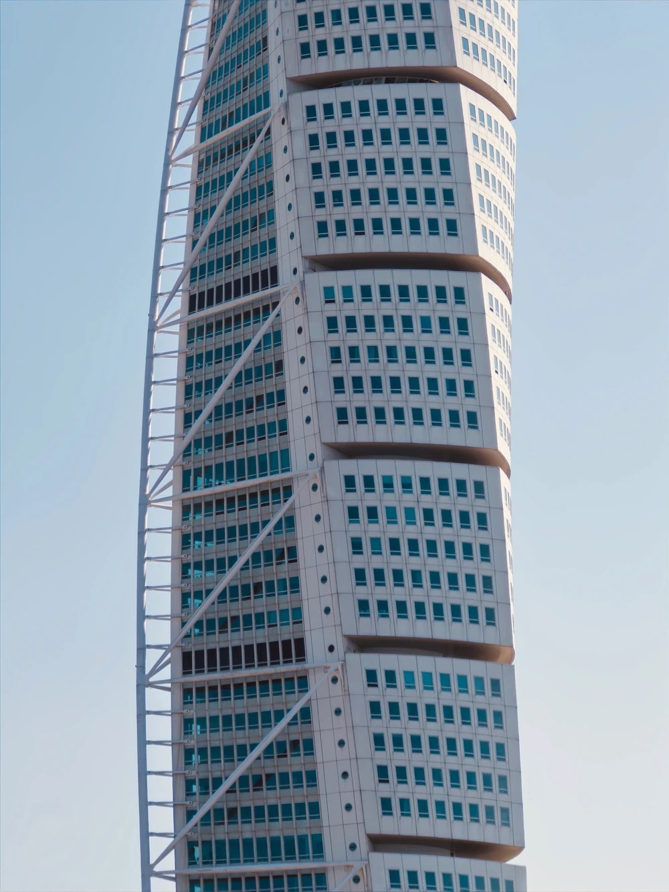
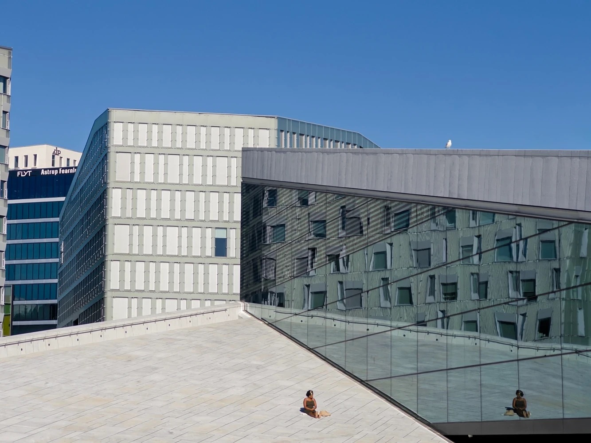

2025
Stockholm, Sweden
3 days trip, mainly landscape and architecture photography


No photos found
Some of my best shots from trips or everyday life. Everything was shot on iPhone 15 Pro and (sometimes) edited on Lightroom.
3 days trip, mainly landscape and architecture photography

